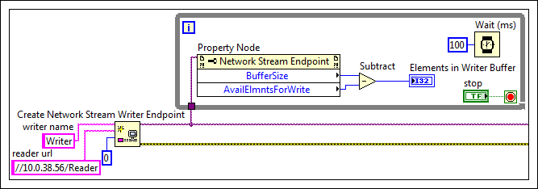

You can use the Network Stream Endpoint properties to display information about endpoints. Complete the following steps to use Network Stream Endpoint properties.
Wire an endpoint refnum wire to the reference input on the property node. Obtain this reference from the reader endpoint reference of the Create Network Stream Reader Endpoint function, the writer endpoint terminal of the Create Network Stream Writer function, or the endpoint out terminal of any of the other Network Streams functions.
Right-click the Property terminal of the Network Stream Endpoint Property Node and select Select Property from the shortcut menu to select the property you want to use.
(Optional) Use the Positioning tool to resize the Network Stream Endpoint Property Node to display more than one property simultaneously.
The following figure shows an example of using the Network Stream Endpoint properties.

In this example, subtracting the Available Elements for Writing property from the Buffer Size property indicates the number of elements in the buffer of the writer endpoint.
 Add�
Add�
 Find
Find